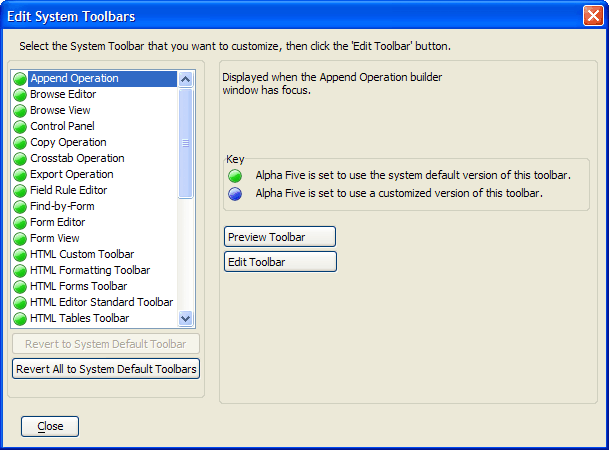

Editing System Toolbars
You can customize the following system toolbars:
Form View
Browse View
Print Preview
Query by Form
Find by Form
Customizing a system toolbar differs from creating a custom toolbar for any of the above modes. A system toolbar is displayed when a custom toolbar is not specified.
To customize a system toolbar:
Open the database Control Panel and display the Code tab.
Right-click in the white space (with no icons selected) in the Code tab window, and select Customize System Menus/Toolbars > Customize System Toolbars.
Use the Edit System Toolbar dialog to define and preview your toolbar selections.

Select the System Toolbar that you want to customize, then click the Edit Toolbar button. The Toolbar Editor appears.
 Note : Edited system
toolbars are stored in A_Toolbars_Customized.Dbf,
which must be distributed with your application.
Note : Edited system
toolbars are stored in A_Toolbars_Customized.Dbf,
which must be distributed with your application.